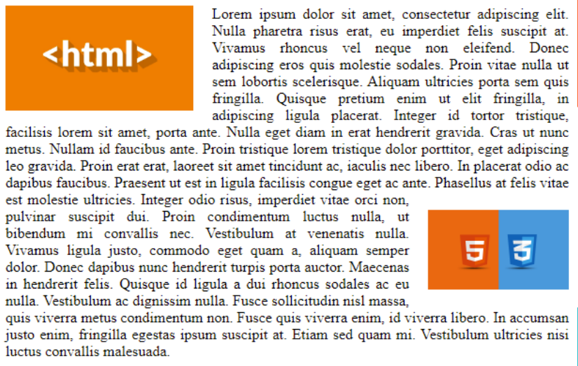

Домашнє завдання по темі CSS-part2.
Перш ніж, почнете розбирати мою домашку
ХОЧУ ВАС ПОПЕРЕДИТИ!!!
Щоб перевірити і продемонструвати, що меню фіксується і працює на "довгому" сайті, мені треба було заповнити сторінку чим-небудь. Але хотілось, щоб букви не відволікали при перевірці. Тому треба було знайти щось максимально безглузде. Я обрав тексти Потапа. Повірте, в них смислу менше, ніж в випадково набраних буквах.
Але я все-одно не рекомендую вчитуватися!!!
Перший рівень
Підключив і перевірив. Чесно!
Меня зовут Настя, а я Потап - Леха.Ну хватит уже ахать и охать.Харе говорить, что в жизни все плохо -Можно ж себя ухайдохать!Припев:Все пучком, а у нас все пучком!Там, где прямо не пролезем, мы пройдем бочком.Все пучком, а у нас все пучком!Красивая малышка с прикольным чувачком.Еще раз все вместе!Все пучком, а у нас все пучком!Там, где прямо не пролезем, мы пройдем бочком.Все пучком, а у нас все пучком!Если нас не подвезут, мы дойдем пешком.Если перед нами вдруг закрылись двери -Мы никого не слушаем и никому не верим. Никому!Мы кричим диджею: Хэй! Рубани звучком! Dj-j-j!И пошло движение... Опа!Припев:И у нас все пучком, а у нас все пучком!Там, где прямо не пролезем, мы пройдем бочком.Все пучком, а у нас все пучком!Если нас не подвезут, мы дойдем пешком.Эх, с нашими-то песнями... Эх, пора на пенсию. Пора-пора-пора!Ну разве у кого-то... А! Получится так весело... А?Прикинуться милашкой и... И простачком...Да, ребята - жить тяжко... Но будет, будет, будет все пучком!А у нас все пучком!Там, где прямо не пролезем, мы пройдем бочком.Все пучком, а у нас все пучком!Красивая малышка с прикольным чувачком.Еще раз все вместе!И у нас все пучком, а у нас все пучком!Там, где прямо не пролезем, мы пройдем бочком.Все пучком, а у нас все пучком!Если нас не подвезут, мы дойдем пешком.То в Мексике, то в мерсике, а я на велике... Чао, персики!Чао! У знакомого новый порш, а я доедаю старый борщ.- Жаба душит, душит жаба!- А не надо завидовать, не надо...- Потому, что не в этом счастье!- Потап, правда? Правда, Настя!Все пучком, а у нас все пучком!Там, где прямо не пролезем, мы пройдем бочком.Все пучком, а у нас все пучком!Если нас не подвезут, мы дойдем пешком.- Как дела?- Да, все пучком!Я встречаюсь с новым чувачком.О, есть заначка за бочком - запорожец со значком.На рыбалочку махнем, там картошечка с лучком.Жизнь несется кувырком. Я кручусь-верчусь волчком.Слава Богу, все живы и здоровы.Значит, все пучком!
Другий рівень
Ніби все за розмірами
Третій рівень

Людство на Землі ще не оговталося від хвороби клодис, що призвела до
найбільшої за пів століття пандемії, коли з’являється новий патоген,
який інфікує винятково вагітних жінок. Група вчених-імунологів намагається
з’ясувати, що він таке і чи пов’язана його поява з нейтринними спалахами,
зафіксованими довкола планети.
Чисельність населення марсіанських Колоній перевищує сто тисяч мешканців,
і третина з них — народжені на Марсі. Вони програють суперспеціалістам із
Землі боротьбу за робочі місця в наукомісткій економіці Марса і змушені
гарувати, мов раби, на низькокваліфікованих ручних роботах. Що більше їх
 сягає повноліття, то дужче вони прагнуть змін, не усвідомлюючи, що ці зміни
ставлять під загрозу саме існування Колоній.
«Колонія» — перша книга з фантастичного циклу «Нові Темні Віки»
про світ
у ХХІІ столітті. Це історія про те, що людина, попри всі її досягнення, не
змінюється, й ані збільшення тривалості життя, ні навіть перетворення на
двопланетний вид не гарантує людству порятунок.
Це історія про те, що людина, попри всі її досягнення, не
змінюється, й ані збільшення тривалості життя...
сягає повноліття, то дужче вони прагнуть змін, не усвідомлюючи, що ці зміни
ставлять під загрозу саме існування Колоній.
«Колонія» — перша книга з фантастичного циклу «Нові Темні Віки»
про світ
у ХХІІ столітті. Це історія про те, що людина, попри всі її досягнення, не
змінюється, й ані збільшення тривалості життя, ні навіть перетворення на
двопланетний вид не гарантує людству порятунок.
Це історія про те, що людина, попри всі її досягнення, не
змінюється, й ані збільшення тривалості життя...

Меня зовут Настя, а я Потап - Леха.Ну хватит уже ахать и охать.Харе говорить, что в жизни все плохо -Можно ж себя ухайдохать!Припев:Все пучком, а у нас все пучком!Там, где прямо не пролезем, мы пройдем бочком.Все пучком, а у нас все пучком!Красивая малышка с прикольным чувачком.Еще раз все вместе!Все пучком, а у нас все пучком!Там, где прямо не пролезем, мы пройдем бочком.Все пучком, а у нас все пучком!Если нас не подвезут, мы дойдем пешком.Если перед нами вдруг закрылись двери -Мы никого не слушаем и никому не верим. Никому!Мы кричим диджею: Хэй! Рубани звучком! Dj-j-j!И пошло движение... Опа!Припев:И у нас все пучком, а у нас все пучком!Там, где прямо не пролезем, мы пройдем бочком.Все пучком, а у нас все пучком!Если нас не подвезут, мы дойдем пешком.Эх, с нашими-то песнями... Эх, пора на пенсию. Пора-пора-пора!Ну разве у кого-то... А! Получится так весело... А?Прикинуться милашкой и... И простачком...Да, ребята - жить тяжко... Но будет, будет, будет все пучком!А у нас все пучком!Там, где прямо не пролезем, мы пройдем бочком.Все пучком, а у нас все пучком!Красивая малышка с прикольным чувачком.Еще раз все вместе!И у нас все пучком, а у нас все пучком!Там, где прямо не пролезем, мы пройдем бочком.Все пучком, а у нас все пучком!Если нас не подвезут, мы дойдем пешком.То в Мексике, то в мерсике, а я на велике... Чао, персики!Чао! У знакомого новый порш, а я доедаю старый борщ.- Жаба душит, душит жаба!- А не надо завидовать, не надо...- Потому, что не в этом счастье!- Потап, правда? Правда, Настя!Все пучком, а у нас все пучком!Там, где прямо не пролезем, мы пройдем бочком.Все пучком, а у нас все пучком!Если нас не подвезут, мы дойдем пешком.- Как дела?- Да, все пучком!Я встречаюсь с новым чувачком.О, есть заначка за бочком - запорожец со значком.На рыбалочку махнем, там картошечка с лучком.Жизнь несется кувырком. Я кручусь-верчусь волчком.Слава Богу, все живы и здоровы.Значит, все пучком!
Четвертий рівень
Меню має бути ліворуч. Запрацює воно чи ні - відкрите питання.